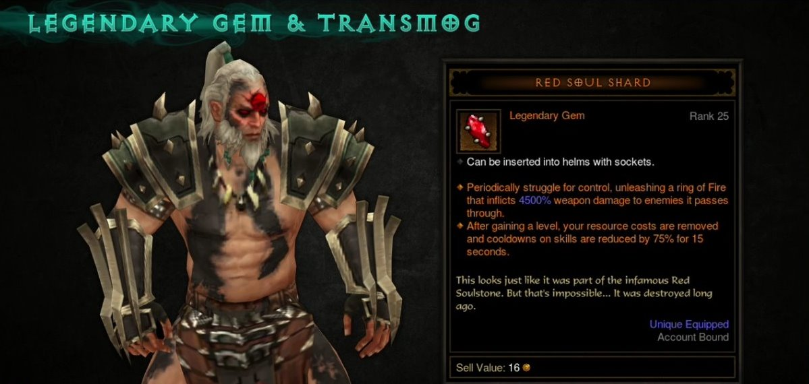

Пач 2.4.3 - Списък с промени
09/11/2016 - 02:28ч. - Автор: Benifios
Вижте също така промените от последните два ъпдейта от 17 дек. и 8 дек.
ПТР на новия пач е вече наличен. Вижте списък с всички промени по-долу.
Основни промени:
Източник
ПТР на новия пач е вече наличен. Вижте списък с всички промени по-долу.
Основни промени:
- Нов Anniversary пач
- Новия пач е кръстен "The Darkening of Tristram", който ще ни отведе в дънджън с 16 нива, където ще се бием с босовете от Diablo I - The Butcher, The Skeleton King, Lazarus както и със самия Diablo.
- Завършвайки този дънджън, ще получите Легендарен джем "Soulstone", който се соква в каската. Той придава допълнителен трансмог ефект. 
- Зоните в този дънджън са направени да изглеждат като в Diablo I.
- Дънджъна ще бъде наличен през януари, когато се очаква новия пач. Той ще бъде наличен само за по 1 месец всяка година.
- При изпълнение на дънджъна ще бъдете възнаградени с две рамки за портрета, Butcher пет и две оръжия за трансмог - Butcher's Sickle и Wirt's Wooden Leg


- Hardware поддръжка
- Добавена е поддръжка за Corsair Utility Engine (CUE) SDK и Razer периферия.
- При качване на ниво, намиране на легендарен, сет предмет или в определени ситуации клавиатурите с подсветки ще променят цвета си.
- За целта ще трябва да обновите firmware на устройствата, които ползвате.
- Оправени бъгове
- (PTR Only) Оправени са доста от проблемите, които причиняват преждевременно затваряне на клиента. Вече е много по-стабилен.
- (PTR Only) Проблемът с изключването на SSAO опцията е оправен.
- (PTR Only) Оправен е проблема с гама опцията на 64 bit клиент.

- Варварин
- Overpower
- Вече ще разполага с 3 чарджа (зареждания)
- Cooldown-а за едно зареждане остава 12 секунди и ще има шанс да бъде намален от критични удари (CC - Critical Chance)
- Overpower
- Оправени бъгове
- Оправен е проблема, когато сте активирали Epiphany и използвайки Wave of Light понякога да не правите поражения.
- Оправен е проблема при кастване на умението Hydra чрез умението Mirror Images, когато илюзиите опитат да кастнат едновременно Hydra умението.
- Оправен е проблема, който не позволяваше на Earth Ally и Fire Ally уменията да не се възползват от Attacks Per Second или +Mystic Ally damage показатели.
- Специфични за даден клас предмети
- Кръстоносец
- Armor of Akkhan - добавена е нова част Talisman of Akkhan (Amulet) - сета вече е от 7 части!
- За момента бонусите си остават без промени.
- Амулета винаги ще се ролва със задължителен Critical Hit Chance и 3 случайни афикса.
- Кръстоносец
- Някои стари легендарни предмети, които са нямали специални афикси са преработени и към тях са добавени такива.
Важно: Промените за тях не са ретроактивни и ще трябва да ги намерите наново!
С промение, които на въведени по тези промени е сложено и ново ниво от което те ще имат шанс да бъдат намерени. Това ниво се определя от нивото на отключване на умението, което подобряват!
- Saffron Wrap - предмет за Варварин
Пораженията, които нанасяте с всеки следващ Overpower ще се увеличава с 40-50% за всеки ударен враг - капа за увеличението на пораженията е 20 врага!
- Faithful Memory - предмет за Кръстоносец
Всеки ударен враг чрез Falling Sword ще увеличава процента поражения от Blessed Hammer с 50-60% за период от 5 секунди.
- Hellcat Waistguard - предмет за Ловец на Демони
Гранатите ще имат шанс да отскочат до 5 пъти и да нанасят допълнителни 50% поражения на скок, а на последният да нанесат 800%.
Това са уменията на които ще действа колана!
Cluster Arrow – Dazzling Arrow, Cluster Bombs, Loaded for Bear и без руна
Rain of Vengeance – Anathema
Strafe – Demolition
Rapid Fire – Bombardment
- Rabid Strike - предмет за Монах
Когато се телепортирате чрез Spirit spender с активно умение Epiphany, ваш клонинг ще копира атаката Ви.
- The Barber - предмет за Знахар
Spirit Barrage вече няма да причинява директни поражения, а ще ги натрупвва на чарджове.
Ако дадена цел не абосрибира поражения от Spirit Barrage умението за период от 1.5 секунди или умре, чарджовете ще се детонират и ще нанесат поражения в радиус от 15 ярда.
Пораженията се увеличават с 15-20% на чардж
- Manald Heal - предмет за Магьосник
Lightning пораженията пречинени от вашите Arcane spenders ще правят допълнителни 20-25% поражения над 5 секунди.
Този ДОТ евект може да се рефрешва, чрез допълнителни Lightning поражения и стакове.
- Saffron Wrap - предмет за Варварин
- Някои стари легендарни предмети са с преработени легендарни афикси.
Важно: Промените за тях не са ретроактивни и ще трябва да ги намерите наново!
- Defender of Westmarch - предмет за Кръстоносец
Вече не може да призовава вълк повече от веднъж на секунда.
Щетите на вълка ще се увеличават с всеки блок направен преди да бъде призован. - Jeram's Bracers - предмет за Знахар
Минималното ниво за падане на този предмет е увеличено от 12 на 31 ниво за да съответства на умението Wall of Death, което тогава чак ще бъде достъпно за ползване.
- Defender of Westmarch - предмет за Кръстоносец
- Оправени бъгове
- Hellfire Amulet
Оправен е проблема с призоваването на Фетиши, чрез Fetish Sycophants пасива от Амулета. Проблема не позволяваше при удар на фетишите да редуцират правилно времето за изчакване на Big Bad Voodoo, когато носите Starmetal Kukri - Illusory Boots
Когато Кръстоносеца използва Steed Charge вече ще може да минава без проблеми през стени поставени от чудовища. - Flail of the Ascended
- Оправен е проблем, който кара домашните Ви любимци (петовете) да изчезват без видима причина.
- Оправен е проблема, който не позволява в някои случаи да се отключи трансмог на предмет.
- AHAVARION, SPEAR OF LYCANDER бъга е оправен! Получавахте бъф до края на рифта.
- Оправен е проблема, който позволява Necrosis пораженията от Helltooth Harness сета да рефлектират обратно. Това се получаваше при определени чудовища, когато Знахаря използа умения като Poison Dart
- Оправен е проблема, който позволява на +Elemental damage bonuses на оръжие да замени бонуса от Ancient Spear by Skular’s Salvation и неговият вид елемент.
- (PTR Only) Оправен е проблемът с Soulstone Shard, който се активира, когато играча е в града..
- (PTR Only) Оправен е проблемът, който позволява безплатното сваляне на джемовете от екипировката Ви.
- Hellfire Amulet
- Season Journey
- The Destroyer и Guardian главите от Сезонното приключение вече няма да изискват аугментация на древен легендарен предмет с джем 30 ниво или по-високо.
- С влизането на тези промени в Conqueror главата ще трябва да аугментирате един древен легендарен предмет с джем поне 50 ниво.
- Оправени бъгове
- Оправен е проблемът с показването на някои от научените сезонни постижения.
- Bounties
- Изискването за броя на убитите единици е редуциран за следните задачи:
Kill Aloysius
Kill Axegrave
Kill Bholen
Kill Captain Donn Adams
Kill The Crusher
- Изискването за броя на убитите единици е редуциран за следните задачи:
- Рифтове
- The Cesspools картата вече е коригина с намален размер и популация. Тя ще е достъпна както за Rifts така и за Greater Rifts.
- Greater Rifts
- Чудовищата трябва да са по-раваномерно разпределени по нивата.
- Вече за изчистване на GR ще трябва да са нужни 2 или 4 нива.
- Вече не трябва да има повтарящи се последователно зони.
- Вече е гарантирана чиста зона пред вратите на всяко ниво.
- Няколко нови вида Елити ще могат да бъдат намерени по нивата.
- Ефекта от следните предмети и умения ще се изчиства при влизането в GR
Предметите Lord Greenstone’s Fan, Fortress Ballista и Flail of the Ascended, а уменията са: Arcane Dynamo и Mythic Rhythm
- Greed’s Realm - Vault
- Порталът към Greed’s Realm ще се затваря след 60 секунди, след като отворите ковчежето на Greed.
- С тази промяна ще може да отваряте неограничен брой пъти Greed’s Realm и няма да е необходима нова игра.
- Зони
- Прекият път към Pandemonium Fortress - ниво 2 в Adventure Mode е преместен в средата на зоната. Това е направено с цел по-бързо достигане на задачите от баунтитата.
- С тази промяна уникалните чудовища, които ще се изискват за убиване на някоя задача ще се намират в първата половина на зоната, а броя нужни чудовища ще се отчита из цялата зона!
- Оправени бъгове
- Оправен е проблема с Bounty: Research Problems
- Оправен е проблема с липсващите чудовища в някои големи зони, когато сте в Greater Rifts, това е доста срещано, когато отворената зона се намира близо до входа.
- Quality of life подобрения по враговете
- Вече може да убивате скачащи врагове към Вас. Такива са например: Winged Assassins, Punishers, Lacuni Huntresses и Burrowing Leapers.
- Чудовища, като Sandsharks, Snakemen и Rockworms, които имат свойството да не позволяват да бъдат атакувани, сега времето им на поемане на поражения ще се увеличи. Също така, когато станат невидими или се скрият няма да могат да го правят за по-дълго от 3 секунди.
- Вече ще може да видим Rockworms (гадният червей) преди да изкочи.
- Преработени и нови афикси на враговете
- Shielding
Вече ще изчезва ако е останал само един враг от елитният пак, който притежава този афикс. - Reflects Damage
Сега ще се изтрелва към Вас, вместо да прави мигновенни поражения.
Внимание: продължителността на предупреждение за активирането на този афикс е намалена от 2 секунди на 1, а продължителността му е намалена от 6 на 4 секунди. - Electrified
Вече ще може да се разпръсква и да нанася поражения на повече цели.
Пораженията от този афикс са намалени с около 35%
- Juggernaut
Нов ефикс на елитите
Juggernaut чудовищата ще са перманенто имунизирани срещу crowd control ефекти, но за сметка на това ще са по-бавни от нормалните чудовища.
Само rare Elite ще може да има Juggernaut афикс
- Shielding
- Оправени бъгове
- Оправен е проблема, който кара Winged Assassinsда ходи по земята вместо да скочи във въздуха.
- Оправен е проблема с Greater Rift Пазителите, който не им позволяваше да се телепортират при играчите, ако са били призовани далеч от тях.
- Оправен е и другият проблем с Greater Rift Пазителите, който не позволяваше да бъдат атакувани в определени локации.
- Belial
- Времето за изчакване от едната му фаза към другата е намалена! Става на въпрос за времето, когато преминава от малка към голяма форма.
- Оправени бъгове
- “Socket To Me” постижението вече ясно иска само един обикновен джем да сложим в екипировката.
- Dyes - Бои
- Вече ще са достъпни при Mystic, за целта тя има нов таб.
- Боите от колекционерското издание на Ванила също ще са добавени там!
- Заради тази промяна продавачите вече няма да ги продават!
- Оправени бъгове
- Оправени са дисплей и текстови проблеми с някои умения и предмети.
- Оправен е проблем с keybind-а , когато UI-то е скрито.
- Оправен е проблема при който Последователите седят статични по време на битка.
- Оправен е проблема при който Последователите не могат да бъдат отзовани по време на битка.
- Оправен е проблема, който позволяваше да бъдат атакувани петовете и Последователите веднага след като влезнат в Рифт, GR или ново ниво на някой от тях.
- PTR Only Добавен е нов продавач Djank M'iem, той ще продава специална торба и тя ще струва 300 шарда и ще съдържа клас специфични предмети.
Източник
+4


{kind=link}
{kind=link}
{kind=link}
{kind=link}
{kind=link}
{kind=link}
{kind=link}
{kind=link}
{kind=link}
{kind=link}